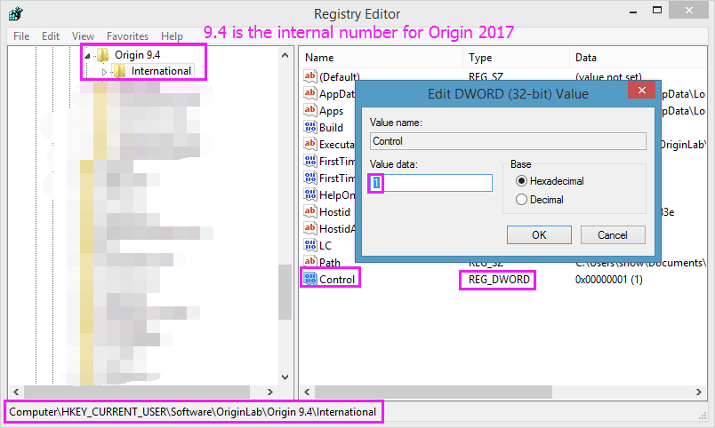

FAQ-752 Was soll ich tun, wenn sich Origin nicht starten lässt?
troubleshooting-Origin-can-not-be-started
Letztes Update: 27.01.2023
Wenn Origin nicht gestartet werden kann, nachdem es installiert wurde, versuchen Sie bitte die folgenden Lösungsvorschläge. Verwenden Sie sie in der Reihenfolge, in der sie aufgeführt werden; wenn Sie eine testen und diese nicht zur Lösung führt, versuchen Sie die nächste.
Reparieren Sie Origin oder installieren Sie die Software erneut und sauber mit der neuesten Installationsdatei.
- Führen Sie Origin Dateien hinzufügen oder entfernen aus und wählen Sie die Option Reparieren.
ODER
- Wenden Sie sich an den technischen Support wegen der Installationsdateien der neuesten Service Releases. Deinstallieren Sie mit dem neuesten Installer Ihr Origin und installieren Sie es dann erneut in einem neuen Ordner. Verwenden Sie einen neuen Ordner als Anwenderdateiordner.
Pfad für Anwenderdateiordner ändern
Falls Origin nicht geöffnet werden kann, führen Sie die folgende Befehlszeile aus, um Origin zu zwingen, einen neuen Anwenderdateiordner auszuwählen. Sie ruft Origin EXE mit vollem Pfad durch Verwenden des Schalters "-d" auf.
"<Origin.EXE path>\<Origin.EXE name>" -d
Zum Beispiel:
"C:\Program Files\OriginLab\Origin2023\Origin64.exe" -d
Einzelheiten zu Origin-Befehlszeilen finden Sie auf dieser Seite.
Origin in der Liste des Task Managers
Wenn Origin im Task Manager aufgeführt wird, versuchen Sie Folgendes:
- Laden Sie den ProcessExplorer herunter (ein erweiterter Task Manager von Microsoft) unter:
- http://technet.microsoft.com/en-us/sysinternals/bb896653.aspx
- Starten Sie Origin, stellen Sie sicher, dass Origin im Task Manager aufgelistet ist.
- Extrahieren Sie das in Schritt 1 heruntergeladene Hilfsmittel und führen Sie procexp.exe aus.
- Klicken Sie in dem geöffneten Dialog mit der rechten Maustaste auf die EXE-Datei von Origin und wählen Sie im Kontextmenü Dump erstellen > Minidump erstellen.
- Eine *.dmp-Datei wird erstellt. Senden Sie diese an uns als .zip-Datei.
Weitere
Wenn Origin im Task Manager nicht aufgeführt wird und Origin nicht gestartet werden kann, senden Sie uns die Debug-Protokolldatei Origin_Log.txt, indem Sie die untenstehenden Schritte befolgen.
- Klicken Sie auf die Startschaltfläche von Windows. Geben Sie im Textfeld Ausführen Folgendes ein:
regedit
Der Registry Editor wird geöffnet.
- Navigieren Sie im Registry Editor zum Verzeichnis HKEY_CURRENT_USER|Software|OriginLab|Origin ***|International|.
- Origin 2015, 2016 und 2017 entsprechen Origin 9.2, Origin 9.3 und Origin 9.4 im Registry Editor.
- Klicken Sie mit der rechten Maustaste auf die rechte Seite des Registry Editor und wählen Sie den Wert Neu: DWORD oder Neu: DWORD (32-bit) auf einem PC mit 64-Bit PC. Geben Sie ihm den Namen Control. Klicken Sie dann mit der rechten Maustaste auf ihn und wählen Sie Modifizieren. Setzen Sie das Textfeld Wertdaten auf 1. Klicken Sie auf OK.
- 
- Öffnen Sie jetzt Origin. Die Protokolldatei mit dem Namen Origin_Log.txt wird in dem Ordner C:\Users\PC\AppData\Local\Temp erstellt. Überprüfen Sie Datum und Zeit, um sicherzustellen, dass sie neu erzeugt wurde.
- Senden Sie uns die Datei Origin_Log.txt.
Hinweis: Bitte löschen den Control-Eintrag in "regedit", um den Modus der Fehlerbehebung (Debugging) auszuschalten. Andernfalls wird Origin womöglich langsamer, wenn Sie es später starten können.
Verwandte Themen
Schlüsselwörter:Fehlerbehebung, Debug, Protokolldatei, Registry, regedit, Reparieren, DWord, Process Explorer